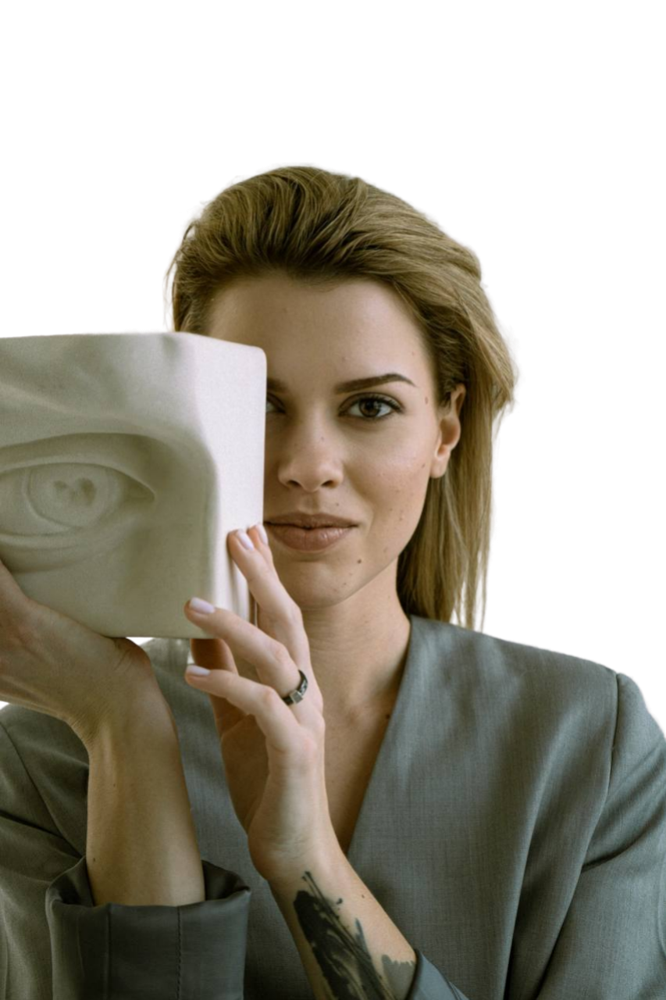

01
Анализ
Разбираем бизнес-задачу, обсуждаем с вашими сотрудниками, определяем метрики успеха.
Проектирую обучение, которое решает бизнес-задачи. От анализа ЦА до тестирования и доработки.
Ксения Григорьева — методист и разработчик электронных курсов. Соединяю педагогический дизайн, аналитику и инструменты: Moodle, iSpring Learn, PowerPoint, ИИ-инструменты для тренажёров, где сценарий зависит от решений ученика.

Сотрудники проходят «для галочки», кликают «далее» и забывают на следующий день.
Никто не может сказать, что именно изменится в метриках после курса.
Начинаю не со слайдов, а с вопроса: что должно измениться в работе сотрудника и в цифрах компании. Метрики закладываю в сценарий с первого дня.
Взрослый ученик приходит со своим опытом. Строю обучение так, чтобы он мог связать новое знание с тем, что уже умеет — через кейсы, практику и рефлексию.
Люди учатся в разном темпе. Проектирую нелинейные сценарии и адаптивные задания, которые подстраиваются под конкретного человека.
Стандартные тесты дают только «верно/неверно». Собираю интерактивные тренажёры сама, без штатных программистов. Ученик принимает решения, а ИИ мгновенно разбирает ответ и объясняет последствия.
Кейс: прототип для отдела продаж. Имитация реальной ситуации в торговой точке. Ученик отвечает голосом, тренажёр адаптирует сложность, проверяет СПВ и ассортимент, даёт конкретную обратную связь: какой шаг пропущен, какая фраза не сработала.
Задача: выстроить обучение и адаптацию в корпоративном университете.
Что сделала: разработала и внедрила программу адаптации на базе LMS iSpring Learn. Создала онлайн-курсы в iSpring Suite, описала бизнес-процессы «продажа» и «монтаж», выявила разрывы и закрыла их обучающими модулями.
Задача: онлайн-курс по бережливому производству для студентов.
Что сделала: составила сценарий, подготовила спикеров, организовала видеопродакшн, разработала тесты и игры. Курировала сборку с разработчиком: проверяла соответствие модулей сценарию и методике, давала ОС, добивалась исправлений до финальной сдачи.
Задача: обучение отдела продаж и настройка LMS.
Что сделала: провела опрос сотрудников, собрала и проанализировала информацию, работала с экспертами, написала сценарии для видео, сверстала курсы в PowerPoint, протестировала на фокус-группе. Настроила LMS Moodle, организовала доработку блока отчётов с программистом.
Разбираем бизнес-задачу, обсуждаем с вашими сотрудниками, определяем метрики успеха.
Сценарий, логика курса, механики, UX. Утверждаем ТЗ — вы видите структуру до вёрстки.
Собираю курс, интерактивы, видео, тексты. При необходимости — тренажёр на ИИ.
Фокус-группа, правки, выгрузка на вашу LMS, передача отчётности.
Вёрстка в PowerPoint на базе триггерной анимации.
Вёрстка в PowerPoint на базе триггерной анимации.
Собран через ИИ-инструменты.
Это рабочие примеры, которые показывают структуру и логику,
а не финальные внедрённые версии.
9+ лет на стыке обучения персонала, бизнес-процессов и методологии. Начинала с бережливого производства и стандартизации — поэтому понимаю, как устроен бизнес изнутри, а не только «как сделать слайд».
Сейчас фокусируюсь на e-learning: сертифицирована по iSpring Suite и iSpring Learn, прошла курс «Методист» (школа Eduson) и «ЦЕХ электронных курсов» (проект «Курсомания»), обучение вайбкодингу у Ольги Ковальчук. Постоянно развиваю насмотренность и внедряю новые инструменты.
Напишите пару предложений о задаче — что не получается или что хочется сделать. Я отвечу, с чего можно начать, и предложу понятный следующий шаг.